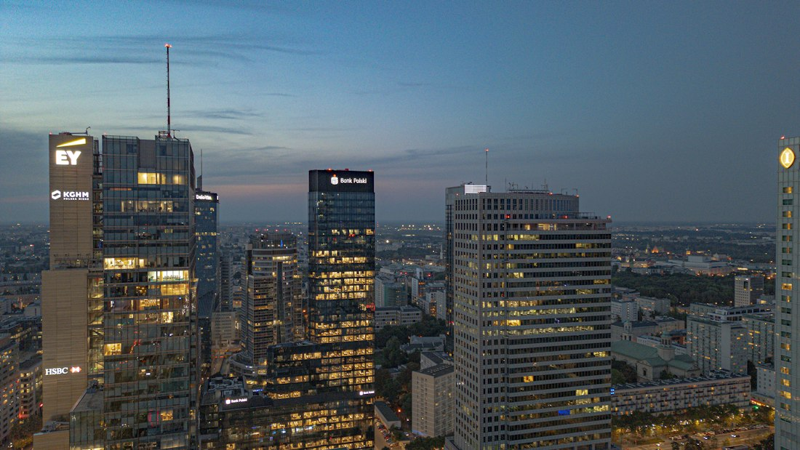

Duża inwestycja
Kapitał na rozwój przedsiębiorstwa lub realizację większego projektu.
Planujesz dużą inwestycję, realizujesz projekt deweloperski albo szukasz finansowania pomostowego? Nie każda transakcja wpisuje się w standardowe kryteria banków. W takich sytuacjach warto rozważyć Private Debt – finansowanie dłużne pozyskiwane m.in. z funduszy i od inwestorów prywatnych.
Pomagamy przedsiębiorcom znaleźć kapitał na większe i bardziej złożone przedsięwzięcia. Analizujemy charakter projektu, potrzebną kwotę, dostępne zabezpieczenia i plan spłaty zobowiązania. Następnie sprawdzamy, które podmioty mogą być zainteresowane finansowaniem Twojej inwestycji.

Kapitał na rozwój przedsiębiorstwa lub realizację większego projektu.
Środki potrzebne do czasu uzyskania finansowania docelowego lub zakończenia inwestycji.
Finansowanie gruntu, rozpoczęcia inwestycji lub kolejnego etapu realizacji.
Projekt wykraczający poza kryteria typowego kredytu firmowego.
Standardowe produkty i określone kryteria oceny przedsiębiorstwa.
Indywidualna analiza transakcji i dostęp do kapitału poza standardową ofertą bankową.
Nie zakładamy z góry, który kierunek będzie odpowiedni. Najpierw poznajemy sytuację Twojej firmy i specyfikę projektu, a następnie sprawdzamy dostępne możliwości finansowania.
Ustalamy kwotę, cel finansowania, zabezpieczenie i plan spłaty.
Sprawdzamy podmioty zainteresowane transakcjami o danym profilu.
Ustalamy potrzebne dokumenty i wspieramy przedsiębiorcę na kolejnych etapach.
Private Debt wymaga realnego planu spłaty.
Już na początku trzeba określić, z jakiego źródła zobowiązanie zostanie spłacone po zakończeniu okresu finansowania.
Nie. Z tego kierunku mogą korzystać również przedsiębiorstwa w dobrej sytuacji, które realizują większe lub niestandardowe projekty.
W wielu transakcjach nieruchomość może stanowić zabezpieczenie. Wymagania zależą jednak od konkretnego podmiotu finansującego.
Nie stosujemy jednego sztywnego progu. Możliwości zależą od skali projektu, potrzebnej kwoty, zabezpieczenia i charakteru transakcji.
Masz konkretny plan inwestycyjny i szukasz kapitału poza standardową ofertą bankową? Opowiedz nam o swoim przedsięwzięciu, potrzebnej kwocie i planowanym sposobie spłaty zobowiązania. Sprawdzimy, jakie źródła finansowania mogą odpowiadać potrzebom Twojego biznesu.